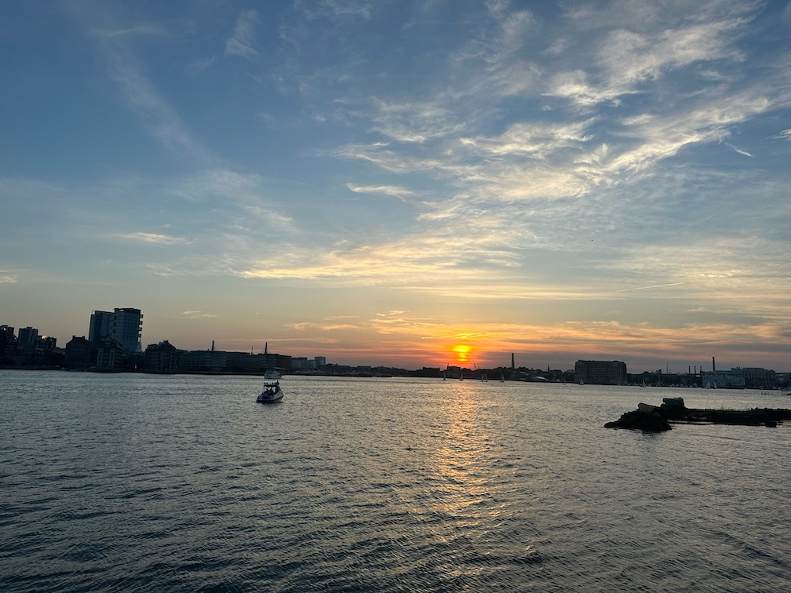
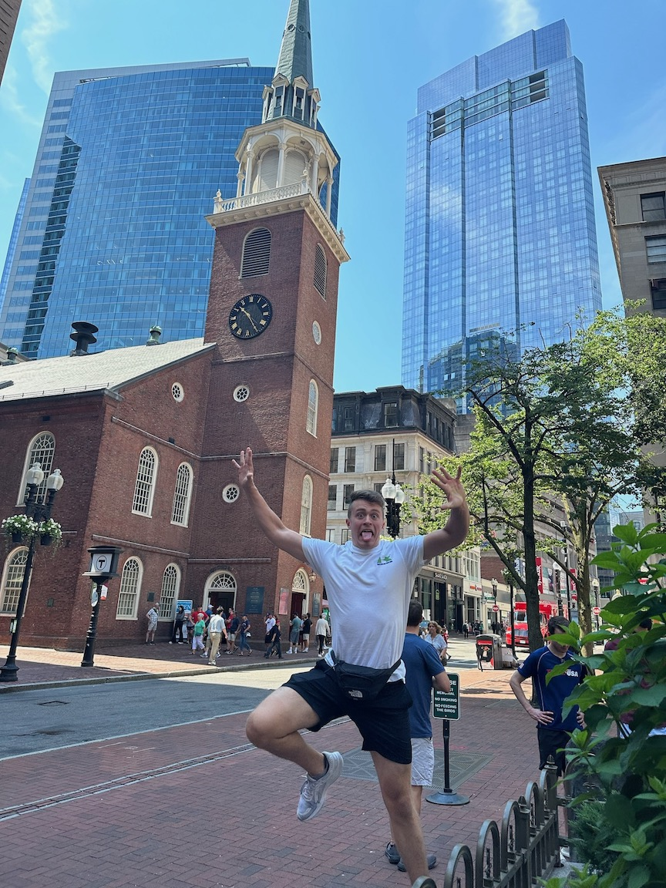
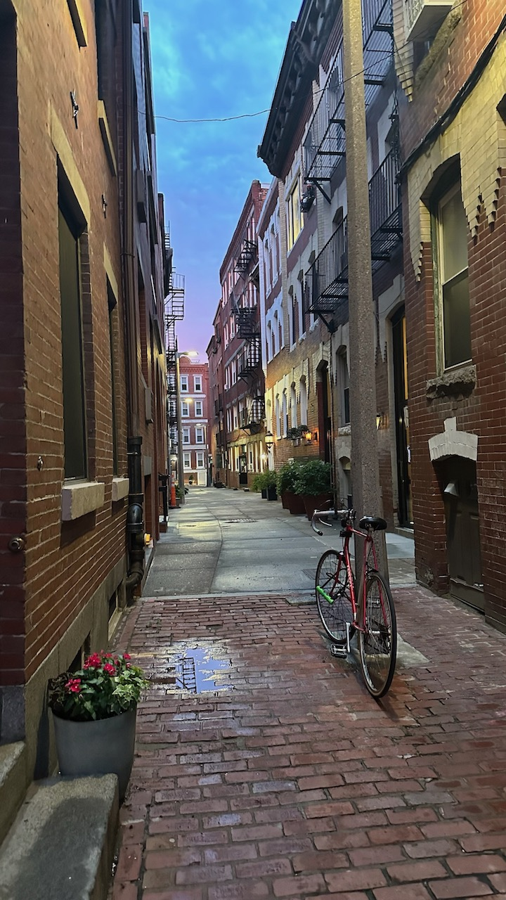
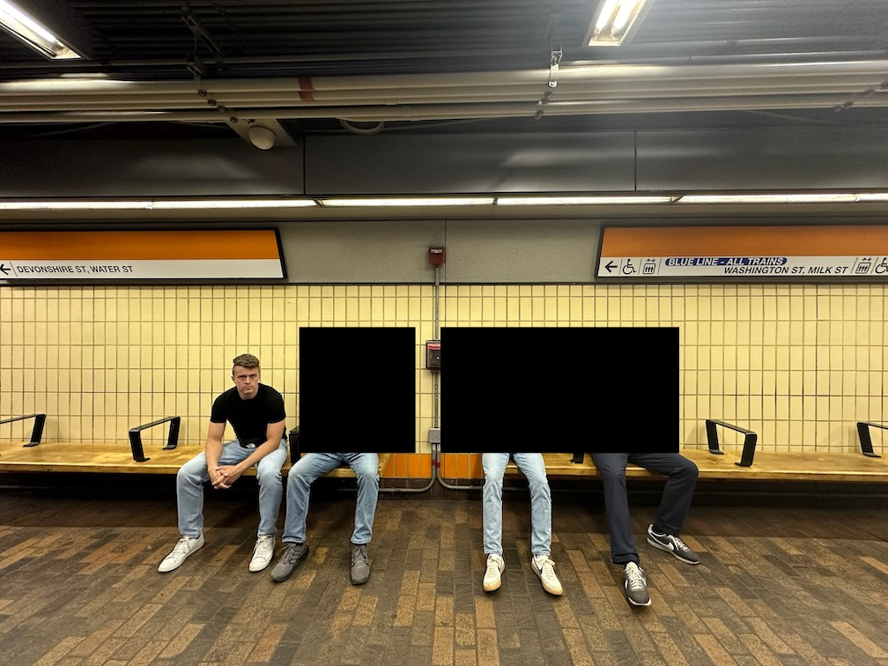
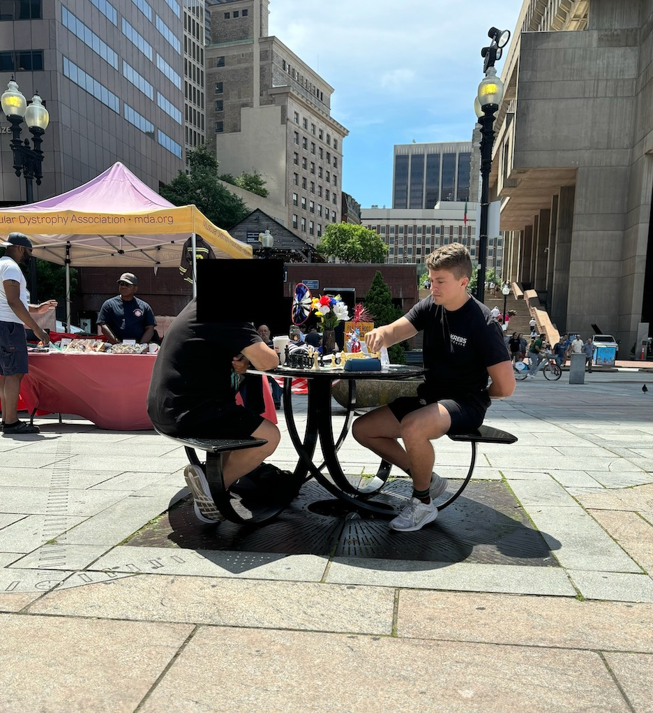

Boston trip report from 13-17 June 2024.
Call me a pompous douche, but my usual airport lounge—the one that silently forces me to arrive three hours before any flight, regardless of the time—has lost its allure. The sparkling water is gone; the dish options are bland and always the same; the waitlist gives off an air of non-exclusivity (I want to look down upon those who can't get in, damn it!). My friend loved it, though, and that's what matters.
Our Uber took 20 minutes door-to-door, taking us through an obviously Hispanic neighborhood that is Jeffries Point, across the bay from and directly east of downtown. E and I touched down at the Airbnb and were immediately ready to explore thanks to the power naps we snuck in during the flight. Off we went!
And down fell the excitement after realizing kitchens were closed. And further down fell the excitement when we discovered this not by a sign on the window or some Google Maps info, but by walking in, standing around while getting gawked at by the patrons (we were obviously out-of-towners), and asking in Spanish (shoutout F) if it was open for food. It wasn't. I settled for an energy bar and losing any and all hope of a proper meal when the food truck showed up. I had seen it on the drive in, but the two simple turns past it combined with the dark, unfamiliar Bostonian streets were enough for me to lose my sense of direction and thus the key to a satisfied stomach. But here it was in all of its Colombian, broken-English glory. I ordered the arepas and we took them to the waterfront to chat and eat with views of the skyline in front of us.
We awoke late in the morning and headed for Boston-regular T's favorite donut place: Kane's Donuts. While they had a Boston cream pie donut on the menu, I was skeptical... was it the ultimate Boston litmus test to check for someone's tourist status, much like ordering swiss on a Philly cheesesteak (hint: don't do this, but if you do, prepare to be mocked and laughed at by any Philly native—just ask John Kerry)? In an effort to conform to those around me, I quickly searched the internet, finding that the Boston cream pie was "created in 1856 by Armenian-French chef Mossburg Sanzian at the Parker House Hotel in Boston", "is the official dessert of Massachusetts", and the "Boston cream doughnut was designated the official doughnut of Massachusetts in 2003".
Next stop was the Freedom Trail, a 2.5-mile trail connecting 16 historic sites in and around Boston. I'll be honest, I don't remember any of them besides the cemetery where a few famous folk were buried (including John Hancock, but did he really do anything besides sign his name like in this most obnoxious way possible?) and the state house. I was much more fascinated at the juxtaposition of buildings. We saw ancient churches in the foreground and massive skyscrapers looming over them in the background; we saw a Chipotle inside a very old building, only turning around to see a very modern Walgreens; we saw borderline-dilapidated brick roads supporting the weight of $100k+ cars accelerating on a dime. On a less depressing note, I came in second for the game of who could stay on the red path the longest without falling off.
We followed the red brick road not to Kansas, not to Oz, but to...you guessed it!... Warren Tavern. The food was unremarkable and we had a server who introduced himself as Cookie. Need I say more?
Bunker Hill was closed off to us because the heat index was greater than 95 °F and that was apparently unsafe. Um, what? 95's a cool day for me and my fellow statesmen. I guess Boston people are just built different (worse). No waivers, no sneaking by, no begging and pleading, nothing. We weren't getting in and that was that. But it didn't matter because a rainbow-colored cloud (on my phone's weather app; the actual cloud was a menacing grey, the kind that says get the heck inside if you know what's good for you and your personal electronics) was quickly approaching. The wind began howling, indicating we should probably start going in the opposite direction in search of cover. It was closer now and outpacing us by a large amount, meaning we'd have to hole up on someone's porch or find a business. We opted for the latter, choosing to get beers at a pizza parlor instead of the rather uninviting dollar store across the street.
We Ubered through rain and traffic to F1 Arcade, a bar themed entirely around Formula 1. Have I been living under a rock the past year and not seen how popular F1 has become? (Apparently yes according to my friends, who mentioned a Netflix documentary I had never heard of.) There were probably around 50 F1 car simulators grouped to accommodate different party sizes. I chose semi-pro (second highest difficulty) the first round, was quickly humbled and angered by the difficulty, bumped myself down to realistic, then finally did semi-pro again because we all agreed to it.
A delicious dinner of Italian subs was had at Monica's Mercato. We took our 15-inch behemoth sammies over to a nearby park and ate them in peace and quiet, away from the hustle and bustle and disgusting sights and sounds of Celtics fans who were up 3-0 (but not for long...). C and I found a wonderful alley—one worthy of writing home about, stopping to take pictures at, posting to a niche subreddit, detailing on a website post, ditching friends for, talking about at a party while humbly bragging about your travels out of the city—and had to stop to admire its coziness.
Our meanderings eventually led us to the area around TD Garden that was unsurprisingly crawling with green-jersey-wearers, bandwagoneers (redundant, I know), and drunks preparing to go HAM when (wait for it...) their team won tonight. The bars were packed, the lines to the bars were packed, and the crowds going to the lines to the bars were packed. The city had shown up tonight to watch their team bring it home (and they did, just not in the way they wanted). We found a table at the back of a pub 40 feet from a TV, but E was happy, so we kept it before heading back to our side of the city at halftime. While I'm not actually sure what transpired during our walk-train ride-walk to the pizzeria, it sure wasn't pretty: the Mavs had stampeded over the tiny leprechauns, leaving one fan behind C with a murderous look on his face and a scared one on his wife's. Ah, so Bostonians really are die-hard sports fans!
From Paul Graham's Cities and Ambition:
What I like about Boston (or rather Cambridge) is that the message there is: you should be smarter. You really should get around to reading all those books you've been meaning to.
But I didn't exactly feel this way walking around Cambridge, at least not nearly as much as I did during my Berkeley visit. Sure, I felt more of an urge to plow through my Goodreads to-read list than normal (if you have zero drive to do this then you should probably find better people to spend time with), but it wasn't to the point of saying see ya and heading to the nearest bookstore to devour knowledge printed on paper.
Harvard, especially Harvard Yard, was substantially better than I expected. Now, I'm no arborist, but the trees... my god, the trees! They were beautiful. They were mature. They were the benevolent shade overlords mercifully protecting us helpless folk from the dangers of the sun's UV rays. The buildings were old and oozed historicity from their decades-old windows (that were now being replaced for insulation purposes). My only complaint was the lack of trash cans. Me, being the good tourist samaritan guy that I am, picked up a littered chip bag tumbling on the ground to #KeepHarvardYardClean, but had to hold onto it for the next 15 minutes while being on the lookout for a trash can and getting judged as a guy who eats Fritos, which I don't!! The rest of our Cambridge visit was uneventful and full of conversations and walking.
Our next site of interest was Back Bay. The wealth here was obvious: Victorian homes, designer boutiques, gelato. Rich people stuff alllllll around. We strolled along the Charles River Esplanade taking in the sights on either side of the river and enjoying the perfect summer weather before heading to get some of the aforementioned gelato and beers at the nearby Bukowski Tavern.
The first game—by far the least fun—was an unexpected one at Empire Garden Restaurant: Who's Gonna Save That Woman From Choking? I came in second place right behind one of her family members, but well ahead of everyone else who was simply sitting and watching. The bystander effect is real!
The second game was much more fun in a much more pleasant location: Sardines in Public Garden! C was a bit tired, so we gave him the honor of being the first (and last, since we only played one game) hider. E and I went right while T and F left. I was off to a fast start weaving in and out of the regular walkers while E did the same 50 meters to my left. I eventually lost him and deemed it too big a park to keep exact tabs on others (not that I was cheating, but I didn't see him jogging around in my vicinity, so figured he had gone elsewhere). Eventually I crossed paths with T but not F, making me nervous that we were the only ones left. Cutting across the bridge to the west in hopes that my not seeing E was a clue paid off: there were C and E sitting on a bench in broad daylight, looking forward and blending in. It was now three of us sardines on a bench, watching as T and F frantically looked around out of fear of being last.
The third game was chess and was played by myself and a chess hustler set up in a public square. 5/2, I was white. I game him $2 and begged for mercy before quickly getting my signature four-move checkmate blocked and moving onto my other signature style when someone is better than me: piece trading. He did try to cheat me in at least one way: moving his black bishop to take my knight on a white square. I caught it and jokingly accused him of truly earning the title of "hustler", to which he responded "whoops, the sun was in my eyes" all while wearing a hat and sunglasses. I suspect he was also playing on my clock since I'm not used to them and was forgetting to press my side. He mated me in the endgame after promoting a queen. (I technically won since he moved his king into check, but I'll let it slide.)
The fourth game was a Red Sox-Yankees matchup. E, C, and F all went, but T and I walked them to the gates before making the many-mile trek back to downtown.
Up at 4:00am, airport by 4:30am, take off by 6:00am, touch down by 9:30am, work by 10:30am.
I never felt unsafe during my time. We never experienced any "bad" parts of town (that we could tell) despite going all over, we stayed out pretty darn late, we took the metro. None of us were really ever on edge.
The metro is awesome.
Lobster rolls are overrated and I'll never get another one out of principle. I paid $40. Both versions—buttered and unbuttered—were mid. This is further evidence that people don't actually like lobster, but rather the excuse to eat copious amounts of butter without judgment.